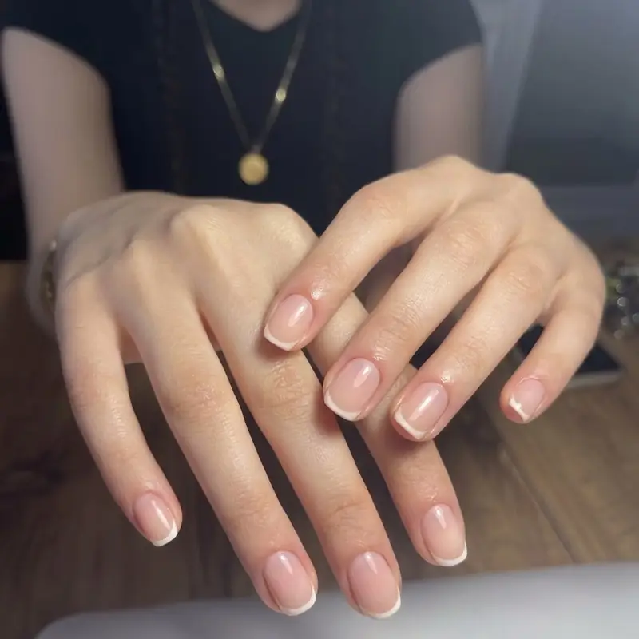

Gaziemir kalıcı oje ve protez tırnak için Fleura Nails ilçenin tüm mahallelerine VIP ev hizmeti veriyor. Gaziemir'de bakım için Konak veya Karşıyaka'ya gitmek zorunda değilsiniz — tüm ekipmanı steril olarak adresinize getiriyoruz.

Gaziemir'de Sunduğumuz Hizmetler
Kalıcı Oje
2-3 hafta dayanıklı; klasik, French, ombre, mat ve glitter seçenekleri.
Protez (Jel) Tırnak
Doğal görünümlü uzatma; badem, kare, oval, stiletto ve coffin form.
Rus Manikürü
Frezeli kuru teknik; kesme işlemi olmadan daha temiz ve uzun ömürlü dip.
Manikür & Pedikür
Şekillendirme, kütikül bakımı, nasır temizliği ve nemlendirme.
Nail Art
Kişiye özel tasarım, referans görselden birebir uygulama.
Gelin Tırnağı
Provalı çalışma; düğün, nişan ve kına için ayrı tasarım.
Gaziemir'de Hizmet Verdiğimiz Mahalleler
Sarnıç'tan Atıfbey'e kadar Gaziemir'in tamamına geliyoruz:
Havalimanı Çevresi ve Esnek Saatler
Gaziemir'in Adnan Menderes Havalimanı'na yakınlığı, randevu taleplerine de yansıyor. Seyahat öncesi bakım yaptırmak isteyen ya da vardiyalı çalışan müşterilerimiz için sabah erken ve akşam saatlerinde randevu planlayabiliyoruz. Uçuş öncesi bakım düşünüyorsanız, uygulamanın tam kuruma süresini de hesaba katmak için randevuyu kalkıştan en az bir gün önceye almanızı öneriyoruz.
Gaziemir'de En Çok Tercih Edilenler
Bölgeden gelen taleplerde kalıcı oje açık ara önde — 2-3 hafta boyunca bakım gerektirmemesi yoğun çalışanlar için belirleyici oluyor. Uzunluk da isteyenler için protez tırnak, mevcut protezi olanlar için ise dolum randevuları düzenli olarak planlanıyor.
Komşu bölgelerde de hizmet veriyoruz: Karabağlar, Buca ve Balçova.
Sık Sorulan Sorular
Gaziemir'in hangi mahallelerine geliyorsunuz?
Atıfbey, Sarnıç, Emrez, Aktepe, Beyazevler, Irmak, Binbaşı Reşat Bey, Gazi, Zafer ve Yeşil dahil tüm Gaziemir bölgesine VIP ev hizmeti veriyoruz.
Gaziemir için ulaşım ücreti var mı?
Hayır. Gaziemir İzmir merkez ilçelerinden biri olduğu için ulaşım verdiğimiz fiyata dahildir; ayrıca yol ücreti almıyoruz.
Seyahat öncesi bakım için ne zaman randevu almalıyım?
Uçuş veya yolculuktan en az bir gün önce randevu almanızı öneriyoruz. Kalıcı oje lamba altında kurusa da ilk saatlerde darbeye karşı hassastır; bir günlük pay bavul hazırlığı sırasında oluşabilecek çiziklerin önüne geçer.
Hijyeni nasıl sağlıyorsunuz?
Metal aletler otoklavda sterilize edilip kapalı poşetlerde taşınır ve randevuda önünüzde açılır. Törpü, buff ve freze uçları tek kullanımlıktır.
Randevuyu ne kadar önceden almalıyım?
Hafta içi için 2-3 gün önce yeterli oluyor. Hafta sonu, özel gün dönemleri ve gelin randevuları için daha erken planlama öneriyoruz.
Gaziemir'de Randevunuzu Oluşturun
Mahallenizi ve uygun gününüzü yazın; size en yakın randevu saatini planlayalım.